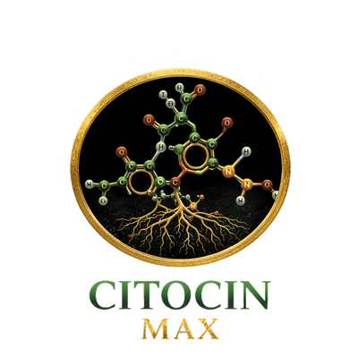
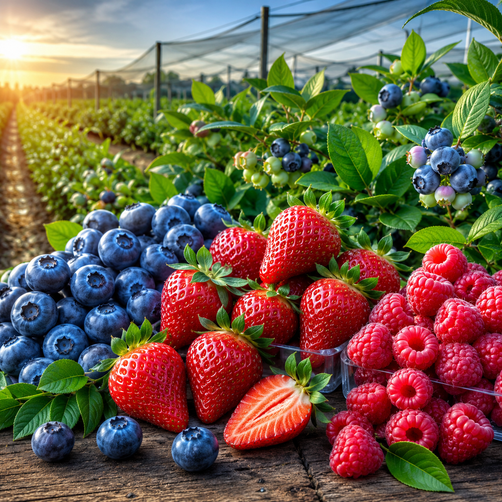
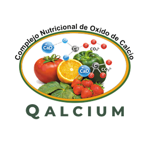
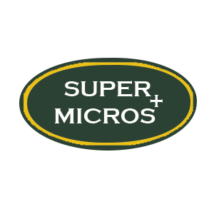
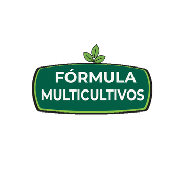

La matriz TBC encapsula y protege los nutrientes: aniones y cationes quedan disponibles, sin fijarse en el suelo ni lixiviarse.
Catálogo profesional · Línea DPO
Formulaciones líquidas con TBC y ICE para acompañar cada etapa del cultivo: más absorción, menos pérdidas y un suelo que vuelve a trabajar.
La diferencia está en la formulación
No es sólo nutriente. Es una plataforma que protege lo que aplicas, estimula la fisiología de la planta y devuelve carbono al suelo.
La matriz TBC encapsula y protege los nutrientes: aniones y cationes quedan disponibles, sin fijarse en el suelo ni lixiviarse.
El consorcio ICE aporta microalgas, aminoácidos, fitohormonas precursoras y osmoprotectores para tolerar mejor el estrés.
Nutrición sin elevar la conductividad eléctrica ni quemar raicillas: el agua y los nutrientes entran por flujo de masas.
El carbono orgánico soluble alimenta la microbiota del suelo y crea el microambiente para multiplicar microorganismos benéficos.
Catálogo DPO 2026
Nutrientes, bioestimulantes y correctores para hortalizas, frutales, berries, granos y jardinería. Abre cada ficha para consultar composición, dosificación y presentaciones.
Fertilizante líquido de alta concentración de nitrógeno (25%) con P y K, acondicionado con aminoácidos libres de origen vegetal para asimilación rápida en etapas de demanda intensa de…
Ficha técnicaVer detalle →Fertilizante ecológico a base de óxido de potasio con microalgas unicelulares que mejoran su asimilación; fórmula acomplejada de potasio, libre de sulfatos, que aporta sustancias orgánicas…
Ficha técnicaVer detalle →Estímulo bioactivo que optimiza la activación y el desarrollo de yemas apicales y laterales; aporta energía para superar la latencia fisiológica, con microelementos, materia orgánica…
Ficha técnicaVer detalle →
Fertilizante compuesto de concentraciones equilibradas de NPK, microelementos y extracto de microalgas; promueve crecimiento vegetativo robusto y activa la floración de manera uniforme.
Ficha técnicaVer detalle →
Complejo de aminoácidos de alta asimilación enriquecido con materia orgánica líquida y activadores microbiológicos; actúa simultáneamente como nutriente, bioestimulante y protector celular.…
Ficha técnicaVer detalle →Complejo Multi Nutricional + Fitohormonas; impulsa la actividad metabólica de la planta para maximizar su desarrollo y producir frutos con calibre uniforme y mayor peso comercial.
Ficha técnicaVer detalle →
Fertilizante Líquido Inorgánico acondicionado con extracto de microalgas; aporta calcio (pared celular) y nitrógeno nítrico para refuerzo estructural, raíces funcionales y absorción…
Ficha técnicaVer detalle →Complejo fosforado a base de óxido de fósforo (P2O5) 50%, enriquecido con materia orgánica y activadores microbiológicos que aceleran el enraizamiento y la asimilación del fósforo.
Ficha técnicaVer detalle →
Mezcla especializada de microelementos esenciales con formulación acomplejada para absorción eficiente; catalizadores de procesos fisiológicos y reacciones bioquímicas (fotosíntesis,…
Ficha técnicaVer detalle →Concentrado de excretas de lombriz californiana rico en ácidos húmicos y fúlvicos que estimula la actividad de microorganismos benéficos del suelo, mejora su estructura y favorece el…
Ficha técnicaVer detalle →
Fórmula líquida multi-nutriente (N, sulfato monopotásico e hidróxido de potasio) de aplicación versátil en todo el ciclo productivo, compatible con la mayoría de sistemas productivos y con…
Ficha técnicaVer detalle →Fertilizante líquido de alta concentración de nitrógeno (25%) con P y K, acondicionado con aminoácidos libres de origen vegetal para asimilación rápida en etapas de demanda intensa de nitrógeno.
| Cultivo | Momento | Dosis | Indicaciones |
|---|---|---|---|
| Tomate, Chile Pimiento, Berenjena, | 15-20 días del trasplante 2do,4to y 6to racimo después del trasplante | 1 a 2 Litros | 2 litros en el trasplante para fortalecer la masa radicular, desarrollo vertical y engrosamiento de tallos. |
| Brócoli, Col Coliflor | En amacollamiento y repetir a los 20 días | 1 a 2 Litros | 2 litros en el trasplante para fortalecer la masa radicular, desarrollo vertical y engrosamiento de tallos. |
| Zarzamora, Fresa, Frambuesa, Arándano y Cereza | En fruto recien cuajado y repetir cada 15 días | 1 a 2 Litros | 2 litros desde la poda y las etapas fenológicas del cultivo donde las plantas demandan más energía |
| Aguacate, Café Mango, Citricos Guanábana | Al iniciar la floración, en caida de pétalos y formación de frutos | 2 a 3 Litros | 3 litros en etapa de hinchado de yemas, floración, amarre de flor y fruta |
| Jardineria | Aplicaciones cada 15-20 días | 5 ml/Lt | Trasplante, inicio de botones y floreo |
Conservar en su envase original, lejos de alimentos y bebidas. No exponer a temperaturas menores a 10 °C ni mayores a 30 °C. Enjuagar el envase tres veces y desechar según la normativa local.
Fertilizante ecológico a base de óxido de potasio con microalgas unicelulares que mejoran su asimilación; fórmula acomplejada de potasio, libre de sulfatos, que aporta sustancias orgánicas para los microorganismos endémicos del suelo.
| Cultivo | Momento | Dosis | Indicaciones |
|---|---|---|---|
| Tomate, Chile Pimiento, Berenjena, | 15-20 días del trasplante 2do,4to y 6to racimo después del trasplante | 1 a 2 Litros | 6-8 litros debe dividirse en partes proporcionales de los riegos semanales |
| Brócoli, Col Coliflor | En amacollamiento y repetir a los 20 días | 1 a 2 Litros | 6-8 litros debe dividirse en partes proporcionales de los riegos semanales |
| Zarzamora, Fresa, Frambuesa, Arándano y Cereza | En fruto recien cuajado y repetir cada 15 días | 1 a 2 Litros | — |
| Aguacate, Café Mango, Citricos Guanábana | Al iniciar la floración, en caida de pétalos y formación de frutos | 1 a 3 Litros | — |
| Jardineria | Aplicaciones cada 15-20 días | 5 ml/Lt | En fruto recien cuajado y repetir cada 15 días |
Conservar en su envase original, lejos de alimentos y bebidas. No exponer a temperaturas menores a 10 °C ni mayores a 30 °C. Enjuagar el envase tres veces y desechar según la normativa local.
Estímulo bioactivo que optimiza la activación y el desarrollo de yemas apicales y laterales; aporta energía para superar la latencia fisiológica, con microelementos, materia orgánica líquida y activador microbiológico.
| Cultivo | Momento | Dosis | Indicaciones |
|---|---|---|---|
| Tomate, Chile Pimiento, Berenjena, | 15 días después del trasplante | 1 a 2 Litros | 2 litros en el trasplante |
| Brócoli, Col Coliflor | 7 y 15 días de trasplante a la formación del florete | 1 a 2 Litros | 2 litros en el trasplante |
| Zarzamora, Fresa, Frambuesa, Arándano y Cereza | 15 días después del trasplante | 1 a 2 Litros | 2 litros desde la poda a piso y etapas fenológicas del cultivo |
| Aguacate, Café Mango, Citricos Guanábana | Defoliación, brotación de yemas generativas, floración y cuaje de frutas | 1 a 3 Litros | 3 litros en la etapa de hinchado de yemas, floración y amarre de flor y fruta |
| Jardineria | Aplicaciones cada 15-20 días | 5 ml/Lt | Trasplante, inicio de botones y floreo |
Conservar en su envase original, lejos de alimentos y bebidas. No exponer a temperaturas menores a 10 °C ni mayores a 30 °C. Enjuagar el envase tres veces y desechar según la normativa local.
Fertilizante compuesto de concentraciones equilibradas de NPK, microelementos y extracto de microalgas; promueve crecimiento vegetativo robusto y activa la floración de manera uniforme.
| Cultivo | Momento | Dosis | Indicaciones |
|---|---|---|---|
| Tomate, Chile Pimiento, Berenjena y Coliflor | 15-25 Días después del trasplante | 1 a 2 Litros | 2 litros en trasplante fortalece masa radicular, desarrollo vertical y grosor de tallos |
| Brócoli, Col Coliflor | 7-15 días de trasplante hasta formación de florete | 1 a 2 Litros | 2 litros en trasplante fortalece masa radicular, desarrollo vertical y grosor de tallos |
| Zarzamora, Fresa, Frambuesa, Arándano y Cereza | Desde la defoliación, brotación de yemas generativas de floración y cuaje de frutas | 1 a 2 Litros | 2 litros en poda a piso y étapas fenolologícas del cultivo donde las plantas demandan más energía |
| Aguacate, Café Mango, Citricos Guayaba, Lichi | Inducción de yemas generativas | 2 a 3 Litros | 3 litros en etapa de hinchado, floración y amarre de flor y fruta |
| Tubérculos, Papa Remolacha, Camote | Desde la formación y desarrollo de tuberculos | 1 a 2 Litros | 1.5 Litros a partir de trasplante, inicio de botones y floreo |
Conservar en su envase original, lejos de alimentos y bebidas. No exponer a temperaturas menores a 10 °C ni mayores a 30 °C. Enjuagar el envase tres veces y desechar según la normativa local.
Complejo de aminoácidos de alta asimilación enriquecido con materia orgánica líquida y activadores microbiológicos; actúa simultáneamente como nutriente, bioestimulante y protector celular. Fertilizante Líquido Inorgánico.
| Cultivo | Momento | Dosis | Indicaciones |
|---|---|---|---|
| SOLANÁCEAS: Tomate, pimiento morrón, papa, berenjena, tabaco; Cucurbitáceas: Pepino, calabaza, melón, sandía, chayote | Desarrollo inicial floración fructificación; Primera vez trasplante 7 y 14 días posteriores | 300 a 500 ml por 100 litros de agua | De 2 a 4 |
| Liliáceas: Cebolla. ajo, cebollin, poro; VEGETALES Y HORTALIZAS; Crucíferas: Brócoli, coliflor, col de bruselas; ORNAMENTALES Y VIVEROS FRUTALES | Desarrollo inicial floración fructificación; Primera vez trasplante 7 y 14 días posteriores | 300 a 500 ml por 100 litros de agua | De 3 a 5 |
| GRANOS Y CEREALES: Maíz, sorgo, arroz, avena, centéno, cebada, trigo, triticale | 7 A 14 Días | De 3 a 4 litros | De 2 a 4 |
| Leguminosas: Alfalfa, haba, garbanzo, ejotes, frijol, chicharo; CULTIVOS INDUSTRIALES: Girasol, cártamo, caña de azucar. | 7 A 14 Días | De 12 a 16 Litros por ciclo de cultivo | De 3 a 5 Días |
| BERRIES: Frambuesa, fresa, arándano, grosella, zarzamora.; Cítricos: Naranja, limón, lima, mandarina, toronja, sidra | Desarrollo vegetativo, inicio de floración, caida de petalos, cuajado fructificación; De 7 a 14 Días | 250-500 ml por 100 litros de agua | De 2 a 4 |
| FRUTALES: Manzano, peral, tejocote, membrillo, mango, papaya, piña, nogal, aguacate, platano, guayaba, vid | Desarrollo vegetativo, inicio de floración, caida de petalos, cuajado fructificación; De 7 a 14 Días | 250-500 ml por 100 litros de agua | De 3 a 5 Días |
Conservar en su envase original, lejos de alimentos y bebidas. No exponer a temperaturas menores a 10 °C ni mayores a 30 °C. Enjuagar el envase tres veces y desechar según la normativa local.
Complejo Multi Nutricional + Fitohormonas; impulsa la actividad metabólica de la planta para maximizar su desarrollo y producir frutos con calibre uniforme y mayor peso comercial.
| Cultivo | Momento | Dosis | Indicaciones |
|---|---|---|---|
| Tomate, Chile Pimiento, Berenjena | 15 días después de trasplante en 2o, 4o y 6o Racimo | 2 Litros | 2-3/Semana |
| Zarzamora, Frambuesa Arándano, Fresa, Cereza | Frutos recien cuajados, repetir a la formación del florete | 2 Litros | 2 /Semana |
| Limón, Naranja, Mandarina, Lima | Inicio de floración, en caída de pétalos y formación de frutos | 2 Litros | 2-3/Semana |
| Aguacate | Al inicio del cuaje de frutos | 2 Litros | 2-3/Semana |
| Higo | — | 3 Litros | — |
| Cucurbitáceas | 5 días después de germinar, repetir cada 20 días. | 2 Litros | 3-5 /Semana |
Conservar en su envase original, lejos de alimentos y bebidas. No exponer a temperaturas menores a 10 °C ni mayores a 30 °C. Enjuagar el envase tres veces y desechar según la normativa local.
Fertilizante Líquido Inorgánico acondicionado con extracto de microalgas; aporta calcio (pared celular) y nitrógeno nítrico para refuerzo estructural, raíces funcionales y absorción eficiente.
| Cultivo | Momento | Dosis | Indicaciones |
|---|---|---|---|
| Tomate, Chile Pimiento, Berenjena | 15 días después de trasplante en 2o, 4o y 6o Racimo | 2 Litros | 2-3/Semana |
| Brócoli, Col. Coliflor | 7 y 15 días de trasplante, y formación del florete. | 2 Litros | 2 /Semana |
| Ajo y Cebolla | 15 a 45 días de trasplante, al inicio de formación de bulbos | 2 Litros | 1-2/Semana |
| Lechuga, Acelga, Espárrago, Zanahoria | 15 a 30 días de trasplante, 6 u 8 hojas verdaderas. | 2 Litros | 3 /Semana |
| Sorgo, Trigo, Maíz, Avena, Cebada, Caña de Azúcar | En amacollamiento y repetir a los 20 días. | 2 Litros | 25 /Semana |
| Cucurbitáceas | 5 días después de germinar, repetir cada 20 días. | 2 Litros | 3 /Semana |
| Vid | Iniciar en brotes de 20cm, en cuaje e inicio de pinta. | — | — |
| Limón, Naranja, Mandarina, Lima | Inicio de floración, en caída de pétalos y formación de frutos | 2 Litros | — |
Conservar en su envase original, lejos de alimentos y bebidas. No exponer a temperaturas menores a 10 °C ni mayores a 30 °C. Enjuagar el envase tres veces y desechar según la normativa local.
Complejo fosforado a base de óxido de fósforo (P2O5) 50%, enriquecido con materia orgánica y activadores microbiológicos que aceleran el enraizamiento y la asimilación del fósforo.
| Cultivo | Momento | Dosis | Indicaciones |
|---|---|---|---|
| Tomate, Chile Pimiento, Berenjena y Coliflor | 15-20 días del trasplante 2do,4to y 6to racimo después del trasplante | 1 a 2 Litros | 2 litros en trasplante fortalece masa radicular, desarrollo vbertical y grosor de tallos |
| Zarzamora, Fresa, Frambuesa, Arándano y Cereza | 7 a 15 días de trasplante a la formación del florete. | 1 a 2 Litros | 2 litros en poda a piso y étapas fenolologícas |
| Aguacate, Café Mango, Citricos Guayaba, Lichi | 7 a 15 días de trasplante a la formación del florete. | 1 a 2 Litros | 3 litros en étapa de hinchado, floración y amarre de flor y fruta |
| Granos y Cereales | Aplicaciones cada 15-20 días | 1 a 2 Litros | Foliar y a suelo 3 litros |
Conservar en su envase original, lejos de alimentos y bebidas. No exponer a temperaturas menores a 10 °C ni mayores a 30 °C. Enjuagar el envase tres veces y desechar según la normativa local.
Mezcla especializada de microelementos esenciales con formulación acomplejada para absorción eficiente; catalizadores de procesos fisiológicos y reacciones bioquímicas (fotosíntesis, formación de proteínas, resistencia a enfermedades).
| Cultivo | Momento | Dosis | Indicaciones |
|---|---|---|---|
| Hortalizas en general | Crecimiento vegetativo, adicione con los demás productos de floración | 1 a 2 Litros | 2 litros en el trasplante para fortalecer la masa radicular, desarrollo vertical y engrosamiento de tallos. |
| Cereales y Granos | Crecimiento vegetativo, amacollamiento formación de granos | 1 a 2 Litros | 2 litros en el trasplante para fortalecer la masa radicular, desarrollo vertical y engrosamiento de tallos. |
| Zarzamora, Fresa, Frambuesa, Arándano y Cereza | Crecimiento vegetativo, inicio de floración y desarrollo de frutos | 1 a 2 Litros | 2 litros desde la poda y las etapas fenológicas del cultivo donde las plantas demandan más energía |
| Frutales en general | En crecimiento de nuevos brotes, inicio de floración y crecimiento de frutos | 2 a 3 Litros | 3 litros en etapa de hinchado de yemas, floración, amarre de flor y fruta |
| Jardineria | Aplicaciones cada 15-20 días | 5 ml/Lt | Trasplante, inicio de botones y floreo |
Conservar en su envase original, lejos de alimentos y bebidas. No exponer a temperaturas menores a 10 °C ni mayores a 30 °C. Enjuagar el envase tres veces y desechar según la normativa local.
Concentrado de excretas de lombriz californiana rico en ácidos húmicos y fúlvicos que estimula la actividad de microorganismos benéficos del suelo, mejora su estructura y favorece el desarrollo radicular.
| Cultivo | Momento | Dosis | Indicaciones |
|---|---|---|---|
| Tomate, Chile Pimiento, Berenjena, | 15 días después del trasplante | 1 a 2 Litros | 2 litros en el trasplante |
| Brócoli, Col Coliflor | 7 y 15 días de trasplante a la formación del florete | 1 a 2 Litros | 2 litros en el trasplante |
| Zarzamora, Fresa, Frambuesa, Arándano y Cereza | 15 días después del trasplante | 1 a 2 Litros | 2 litros desde la poda a piso y etapas fenológicas del cultivo |
| Aguacate, Café Mango, Citricos Guanábana | Defoliación, brotación de yemas generativas, floración y cuaje de frutas | 1 a 3 Litros | 3 litros en la etapa de hinchado de yemas, floración y amarre de flor y fruta |
| Jardineria | Aplicaciones cada 15-20 días | 5 ml/Lt | Trasplante, inicio de botones y floreo |
Conservar en su envase original, lejos de alimentos y bebidas. No exponer a temperaturas menores a 10 °C ni mayores a 30 °C. Enjuagar el envase tres veces y desechar según la normativa local.
Fórmula líquida multi-nutriente (N, sulfato monopotásico e hidróxido de potasio) de aplicación versátil en todo el ciclo productivo, compatible con la mayoría de sistemas productivos y con uso en hidroponía.
| Cultivo | Momento | Dosis | Indicaciones |
|---|---|---|---|
| Aguacate, higo, café, piña, platano, citrícos, durazno, vid, mango, manzana, nogal, papayo, guayaba y berries | Realizar aplicaciones multiples cada 15 a 20 días de intervalo entre cada aplicación | — | 10 a 20 litros |
| Tomate, brocoli, chile, verduras de hoja, cereales, leguminosas, crucíferas, cucurbitáceas, tubérculos | Aplicar al suelo con agua suficiente para cobertura optima. Para obtener mejores resultados, concentre la nutrición cerca de la zona radicular. | — | 5 a 10 litros |
Conservar en su envase original, lejos de alimentos y bebidas. No exponer a temperaturas menores a 10 °C ni mayores a 30 °C. Enjuagar el envase tres veces y desechar según la normativa local.
TBC e ICE son tecnologías de la plataforma DPO. La formulación y dosis final dependen del cultivo y de la ficha técnica vigente; consulte con su asesor.
Programa de sinergia bionutricional
La matriz TBC protege y transporta los nutrientes; el consorcio ICE aporta microalgas, aminoácidos y osmoprotectores. El resultado es una nutrición más eficiente ante estrés, salinidad y pérdidas por lixiviación.
Precios y disponibilidad: consulte con Dominio Probiosis Organic.
Hablemos de su cultivo
Cuéntenos qué cultiva, en qué etapa está y qué busca resolver. Le ayudamos a elegir la mezcla y la dosis correcta.